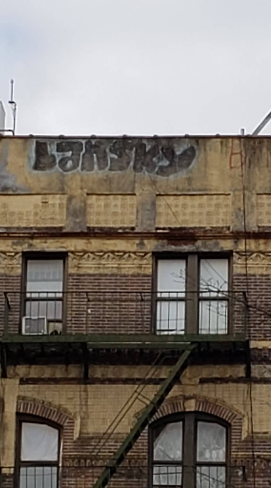

Ho body! Today began with a trip to get a free COVID test. We tried to go yesterday, but the line was too long, so we decided to wake up early to go today. But, the line was even longer early in the day! We still needed a test to be responsible for our trip to Philly tomorrow (We're doing what we can to be safe after mistakenly going out in our first 5 days in New York), so we waited. It took two hours before we got our test, and it was COLD. I kept wanting to say something like, "If only they used Solid they could set up a virtual line," but to be honest, they could've set up a virtual line with modern technology and chose not to do that, so they probably wouldn't have done it if Solid was common. Though, there could be an argument for Solid making it easier to set up impromptu digital technology. It was a free COVID test, so I guess I shouldn't have expected a pleasant experience haha. One entertaining thing was some graffiti that said "Bansky." I wonder if it was a true misspelling or if someone was being cheeky. Ailin said that one of her favorite things about NYC was misspelled graffiti!
After the experience in line, we rewarded ourselves with lunch from a sandwich place called "Cheeky Sandwiches." They have an amazing chicken sandwich between two buttermilk biscuits. While I waited outside for our order to be ready, Ailin went down the block to the post office to mail a letter, and when she came back, she said she witnessed a crime! A group of 12 people beat up one guy in broad daylight prompting her to call the police. Later in the day, she was called back to the crime scene to talk with the case's detective. She seemed to take it pretty well, but it's just an addition to a crazy morning!
The rest of the day went as planned. I fixed a Liqid chat bug by adding a debounce to the search bars and I completed the login flow and most of the forgot password flow on the IdP.
In the evening we just relaxed after a draining day. I didn't work on the thoughts around the company I plan to create, so that will need to be done on Sunday.